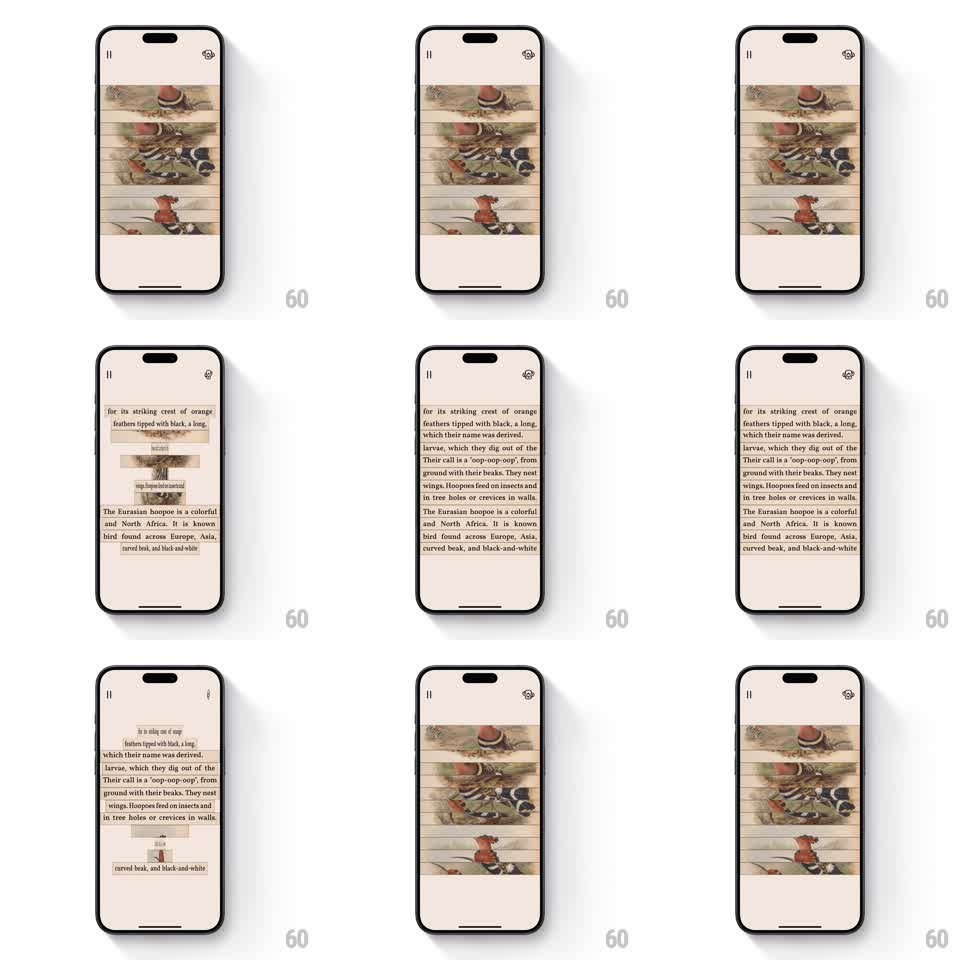

Media
Frame-by-frame

Rebuild this animation 1:1: Art of Fauna's image-to-text flip - the bird illustration card is sliced into horizontal slats that flip over in a staggered 3D cascade, each slat's back carrying a line of the species description, turning the picture into a readable text block.

Rebuild this animation 1:1: Art of Fauna's image-to-text flip - the bird illustration card is sliced into horizontal slats that flip over in a staggered 3D cascade, each slat's back carrying a line of the species description, turning the picture into a readable text block. ## Integration Integration: stack-agnostic spec - springs given as stiffness/damping, timed motions as duration + curve; map every value to your framework and animation library of choice. ## Scene Warm beige screen: pause + hint icons top, the card (a vintage hoopoe illustration) cut into ~10 equal horizontal slats. Slat backs: cream with serif text lines that together form the description paragraph. ## Motion spec Pattern: staggered 3D slat flip, ~1.5s each way. - Slats flip on their horizontal center axis (rotateX 0 -> 180deg, 500ms, ease-in-out), staggered top-to-bottom 50ms apart. - Mid-flip the slat reads as a thin line - true 3D perspective, no fake scaleY squash. - The assembled text side sits flush (2px slat gaps) and reads as one continuous paragraph block. - Reverse transition flips bottom-to-top back to the image. ## Calibration - Stagger direction gives the cascade meaning: top-down reveals, bottom-up dismisses. - Text lines are pre-aligned to slat boundaries; a sentence crossing a slat seam mid-glyph looks broken. ## Reduced motion Whole card crossfades between image and text (300ms); no slats. ## Don't miss - Every slat shares one light source: highlights shift as slats turn, consistently across the stack. - Icons and background never move; the card owns the stage.